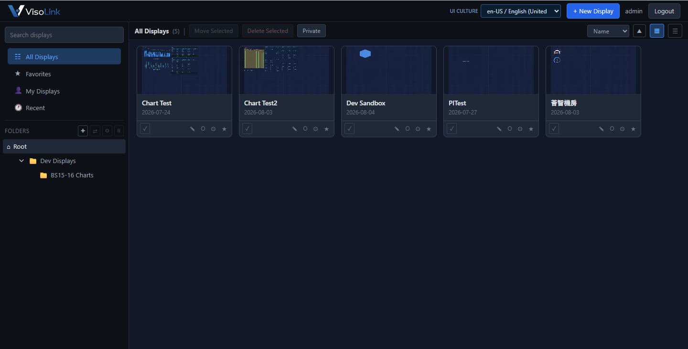

平台定位
知道 VisoLink 如何把資料、圖面與分析串成日常工作流程。
先建立共同語言，再進入畫面設計、日常監看與系統管理。
知道 VisoLink 如何把資料、圖面與分析串成日常工作流程。
分辨 Studio、Runtime 與系統管理的用途。
理解設計、監看及管理人員各自負責什麼。
理解圖面權限與資料權限是兩件不同的事。
VisoLink 是一套整合資料連接、視覺設計、即時監看與情境分析的平台。

把不同設備、資料庫及資訊來源組織成一致的瀏覽與使用方式。
透過圖面、元件、狀態與趨勢，讓現場資訊更快被理解。
監看時即可保留時間點、比較資料，不必離開情境另找工具。
每一位使用者不一定負責全部步驟，但必須知道自己的工作位於哪一段、前後由誰承接。
查看授權圖面、掌握狀態、使用時間篩選與分析功能。
重點：正確判讀與回報建立圖面、配置元件、綁定資料並驗證 Runtime 呈現。
重點：清楚、正確、可維護管理資料來源、人員群組、權限、系統狀態與維運作業。
重點：安全、穩定、可追溯Data Source平台與外部系統或設備資料建立連接的起點。
View將資料整理成可瀏覽、可綁定的欄位結構。
Data Binding讓畫面元件的文字、顏色或數值由實際資料驅動。
Display在 Studio 設計、於 Runtime 實際使用的完整畫布。
Symbol文字、圖形、儀表、趨勢及其他可配置的畫面物件。
製作與維護 Display。可放置元件、設定屬性及綁定資料。
建立內容執行已發布的 Display，進行即時監看與時間情境分析。
使用內容管理資料、人員、權限與系統運作狀態。
治理平台Runtime 不只呈現現在，也能透過全域時間、趨勢與時間標記回到同一情境檢視資料。
決定使用者能否進入、查看或操作某一個 Display。
控制「入口」決定使用者能否讀取該圖面綁定的資料來源與內容。
控制「內容」兩種權限都符合時，才會呈現完整且可用的監看資訊。
若元件顯示無權限或沒有資料，先確認授權與資料狀態，不要以錯誤值代替真實內容。
使用自己的帳號，確認進入正確的系統與畫面。
判讀前先確認目前時間範圍、資料是否持續更新。
不要共用帳號，也不要嘗試超出工作授權的內容。
發現異常時記錄畫面、時間、對象及操作步驟再回報。
Studio、Runtime 與系統管理分別負責什麼？
為什麼看到 Display，不一定代表看得到其中資料？
判讀一個異常數值前，至少要確認哪些情境資訊？